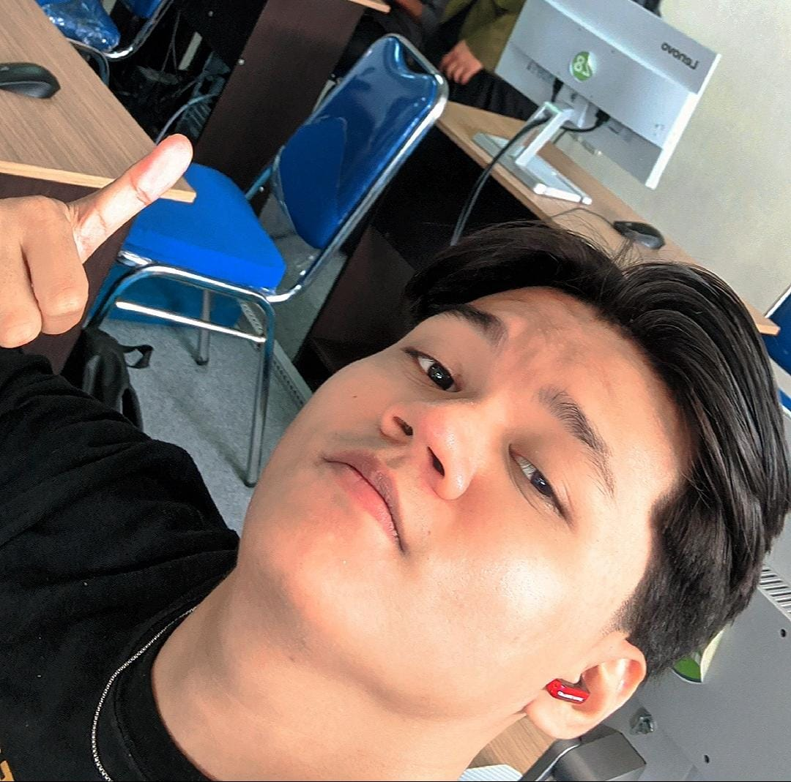

PROJECT PERTAMAKU ADALAH DIRIKU SENDIRI

Halo! Aku Lalu Amarin Emgirinata, umurku baru 21 tahun dan baru memulai perubahanku mulai dari menurunkan berat badanku dari 98kg hingga 64kg.
Diet ini termasuk project soalnya aku merencanakan dan mengatur pola hidup dengan berolahraga dan menjaga pola makan selama 1 tahun hingga saat ini.
Diet ini berawal di awal tahun 2024, dan sekarang aku berhasil mendapatkan badan idealku, tentunya mendapat apresiasi dari keluarga, teman dan juga termasuk dosenku.
Saat ini aku sedang berkuliah di UNIZAR dan baru semester 4.
Sebelum aku kuliah, kegiatanku adalah bekerja.
Perjalanan karirku dimulai pada tahun 2022 setelah lulus SMA.
Aku pertama kali kerja di warung nasi padang di bagian dapur selama satu tahun, lalu kerja di Gojek selama 2 bulan,
kemudian kerja di bagian kasir di toko tas selama 5 bulan, dan setelah itu sambil kuliah aku juga kerja di warkop.
Prestasiku adalah pernah masuk 10 besar lomba karate aliran Ishikawa.
Skillku cenderung ke coding, contohnya web ini yang aku buat sendiri walaupun skillku masih kurang, aku akan terus berusaha berkembang.